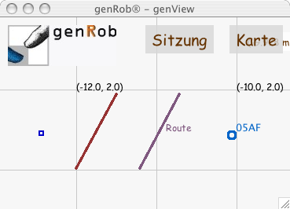
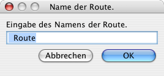
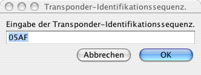

|
Elemente
Kartenelemente sind im übertragenen Sinne alle die Elemente,
die Koordinaten haben.
Dazu gehören Elemente verschiedenen Typs.
Dabei wird ein Teil der Elemente von genRob®-genMap verwaltet,
andere verwalten sich selbst.
Für wieder andere stellt genView die Verbindung zwischen Elementen
aus genMap und verschiedenen Roblet®-Servern anderen Typs her.
Zur ersten Gruppe von Elementen gehören Marken, Segmente (Kanten) und
Routen.
Die zweite Gruppe bilden die Roboter verschiedenen Typs einschließlich
der Roboter-Simulation genRob®-genSimulation.
Die dritte Gruppe sind im wesentlichen die Transponder.
Hier stellt genView die Verbindung zwischen Transponderposition
(verwaltet in genMap)
und den aktuellen Daten vom Transponderlesegerät (genRob®-genTransponder)
her.
Zur dritten Gruppe gehören aber auch Meßdaten des Teils
Sitzung, deren Besprechung dort
erfolgt.
Elemente in genRob®-genMap
Marken, Segmente, Routen und Transponder werden (mindestens mit ihrer Position)
in genRob®-genMap gehalten.
Marken sind in Form von blauen Quadraten dargestellt,
Segmente als braune Strecken,
Routen als violette Strecken mit Text und
Transponder als hellblaue Kreise mit Transponder-Identifikationssequenz.

Dabei bestehen die Unterschiede aus Sicht von genView (und damit des
Bedieners) in der Anzahl der Bedienpunkte und der Benennungsmöglichkeit.
Ein Bedienpunkt ist eine Koordinate eines Elements, die genView nutzt, um
dem Bediener Manipulationen des Elements zu ermöglichen.
Dabei haben
- Marken und Transponder nur einen Bedienpunkt (ihre Position),
- Segmente und Routen zwei Bedienpunkte (ihre Endpunkte) und
- nur Routen und Transponder die Möglichkeit, benannt zu werden.
Will man ein Element erstellen, so muß man zunächst per
Kartenmenü den
Verwaltungsmodus des zugehörigen Typs einstellen.
In diesem Modus sind diese Elemente dann verwaltbar.
Erstellen eines Elements
Um ein Element neu zu erstellen, hält man die Shift-Taste
gedrückt und platziert dann das Zeigegerät etwa dort, wo man es
hin haben will.
Nach der Berührung ("klick") erscheint dann ein neues Element.
Ändern der Position eines Elements
Zum Ändern der Position einer Marke oder eines Transponders, bewegt man
das Zeigegerät zu dessen Ausgangsposition, berührt ("klickt") es
und "zieht" es dann zur gewünschten Position.
Füge Segmente geht man grundsätzlich genauso vor, nur daß hier für jedes
Ende separat erfolgen muß.
Ändern der Benennung eines Elements
Nur Routen und Transponder haben eine Benennung.
Um die zu ändern, muß bei gedrückter Shift-Taste
am jeweiligen Element ein Bedienpunkt berührt ("geklickt") werden.
Daraufhin erscheint ein Dialogfenster, welches die bisherige Benennung
anzeigt und Änderungen entgegennimmt.


Löschen eines Elements
Achtung:
Das Löschen von Elementen kann nicht rückgängig gemacht werden.
Zum Löschen eines Elements muß bei gedrückter Alt-Taste
das jeweilige Element an einem Bedienpunkt berührt ("geklickt") werden.
© 2002-2007
Hagen Stanek,
genRob®
genSite 2.1.2
|
|